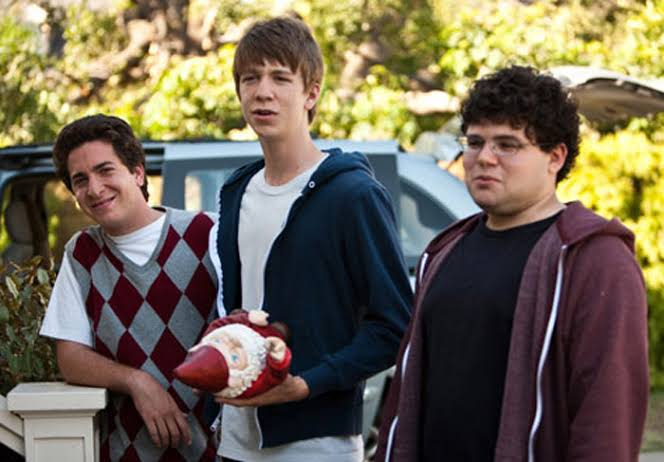
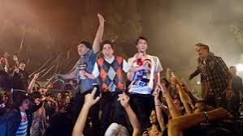
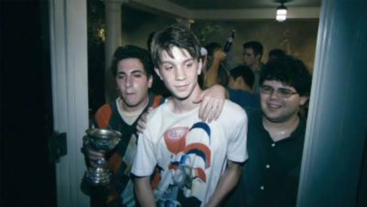
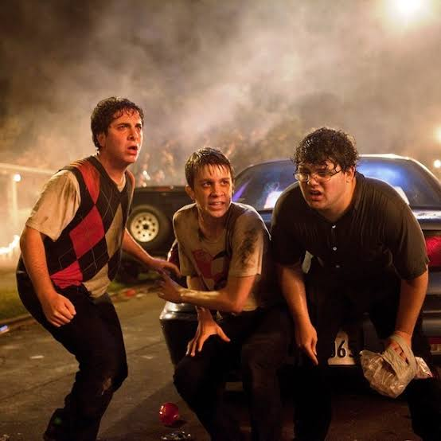
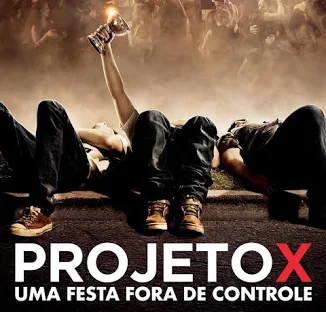

PROJETO X

HISTORIA
Lançado em 2012, Projeto X: Uma Festa Fora de Controle é uma comédia adolescente que acompanha Thomas, Costa e J.B., três amigos que decidem organizar uma festa para tornar Thomas popular na escola. O que começa como uma pequena comemoração rapidamente se transforma em uma festa gigantesca, atraindo centenas de pessoas e causando um verdadeiro caos. Com música, bebidas e situações inesperadas, a noite acaba se tornando inesquecível. O filme se destaca pelo estilo de gravação com câmera na mão, dando a impressão de que os acontecimentos estão sendo registrados por alguém presente na festa.


BASTIDORES
As gravações de Projeto X aconteceram durante aproximadamente 25 noites, com centenas de figurantes para tornar a festa mais realista. Os atores principais eram relativamente desconhecidos e passaram um período juntos antes das filmagens para desenvolver uma amizade verdadeira. A produção utilizou câmeras de celulares e gravações em estilo amador para criar uma experiência mais realista. O cenário da festa foi especialmente construído e acabou sendo bastante destruído durante as filmagens. Outro detalhe interessante é que a equipe buscou inspiração em festas reais para criar situações convincentes. A combinação de música, iluminação e movimentação dos figurantes ajudou a transmitir a sensação de uma festa completamente fora de controle.


DETALHES DOS BASTIDORES
Durante as gravações, os atores receberam celulares para filmar cenas espontâneas, acumulando mais de 10 horas de gravações extras. O filme também foi gravado em um cenário construído especialmente para a produção, que acabou praticamente destruído. Outro detalhe curioso é que os protagonistas foram enviados juntos à Disneyland e passaram um fim de semana em uma cabana para desenvolver uma amizade verdadeira. Além disso, grande parte do elenco era formada por atores estreantes, escolhidos por meio de audições abertas.
CURIOSIDADES
-
Atores desconhecidos: Grande parte do elenco era formada por atores pouco conhecidos, escolhidos para deixar o filme mais realista.
-
Filmagens com celulares: Algumas cenas foram gravadas utilizando celulares, reforçando a sensação de uma festa real registrada pelos convidados.
-
Cenário destruído: A casa utilizada nas filmagens foi especialmente preparada para a produção e acabou sofrendo grandes danos durante as gravações.